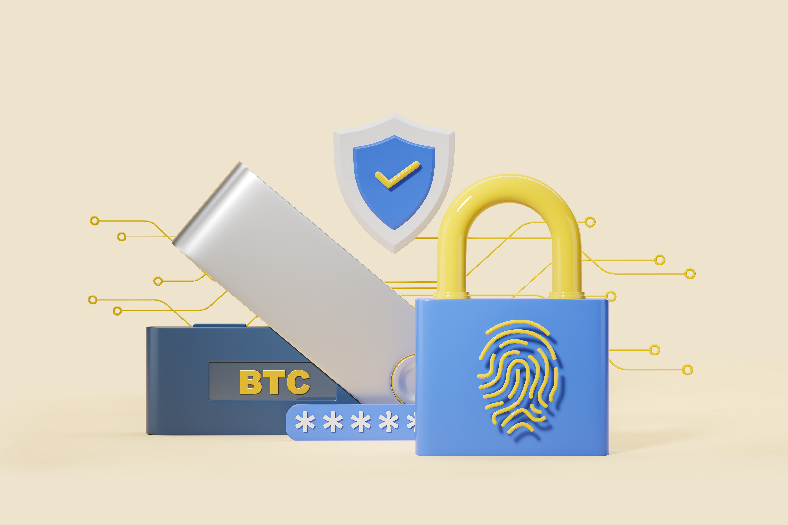
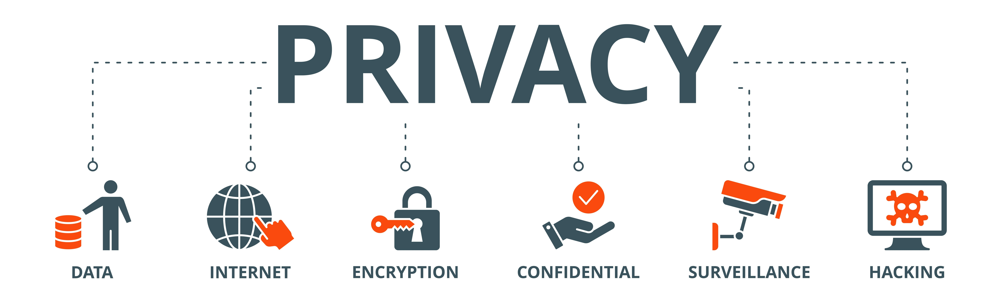

ВВЕДЕНИЕ
Современное развитие инфокоммуникационных технологий (ИКТ) и интернет-технологий (ИТ) наглядно демонстрирует их значительное влияние на экономику, общество и образ жизни людей. В последние наблюдается устойчивая тенденция к глобальной цифровизации, которая охватывает как производственные процессы, так и сферу услуг. Технологические достижения, такие как интернет вещей (IoT), искусственный интеллект (ИИ) и облачные вычисления, способствуют не только повышению эффективности бизнеса, но и улучшению качества жизни населения, позволяя автоматизировать рутинные задачи и ускорять обработку данных.
Эти изменения тесно связаны с концепцией цифровой экономики, которая постепенно становится основой глобальных экономических процессов. Цифровизация затрагивает все сферы деятельности: от электронной коммерции до здравоохранения и финансов. Сектор электронных услуг продолжает расти и развиваться, что подчеркивает значимость ИТ в обеспечении устойчивого экономического роста. В таких сферах, как электронная коммерция и цифровой контент этот рост стимулирует предприятия адаптироваться к новым технологиям, что приводит к развитию новых бизнес-моделей и повышению конкурентоспособности.
Параллельно с цифровизацией экономики развивается концепция Индустрии 4.0, которая представляет собой новый этап в промышленной революции. В основе этого движения лежит интеграция умных технологий, таких как IoT, робототехника и ИИ, в производственные процессы. Благодаря этим технологиям, предприятия могут не только автоматизировать производственные циклы, но и анализировать данные в реальном времени для оптимизации ресурсов. Например, в России продолжается активное внедрение решений в области виртуальной реальности (VR) и дополненной реальности (AR), что свидетельствует о потенциале для дальнейшего роста технологического сектора.
В то же время развитие ИТ тесно связано с эволюцией интернета. Web 3.0, основанный на принципах децентрализации и приватности данных, представляет собой следующий шаг в эволюции сети. Использование блокчейна и смарт-контрактов позволяет создать новые формы взаимодействия с данными и сервисами, обеспечивая большую безопасность и независимость от централизованных платформ. Этот подход активно развивается как в мире, так и в России, где на данный момент в том числе особенно активно реализуются инициативы по созданию отечественных решений в сфере ИТ и кибербезопасности в частности.
Источник:
Тренды.РБКТаким образом, стремительное развитие ИКТ и интернет-технологий не только трансформирует экономику и промышленность, но и создает новые возможности для дальнейшего технологического прогресса, открывая перед обществом перспективы безопасного и более децентрализованного будущего.
КЛЮЧЕВЫЕ НАПРАВЛЕНИЯ РАЗВИТИЯ ИТ В КОНЦЕПЦИИ «WEB 3.0». ДЕЦЕНТРАЛИЗАЦИЯ ХРАНЕНИЯ ДАННЫХ
Web 3.0 представляет собой концепцию, основанную на семантической сети, предложенной Тимом Бернерсом-Ли в 2001 году.
Основная идея заключается в структурировании значимого контента веб-страниц и объединении его в единую семантическую «паутину». Это позволит создать программное обеспечение, способное понимать смысл и выполнять сложные задачи для пользователей.
Источник:
Яндекс.ОбразованиеОднако концепция Web 3.0 выходит за рамки семантической сети и включает в себя следующие элементы:
- Пограничные вычисления — обработка данных будет распределена между компьютерами, телефонами, бытовой техникой, датчиками и даже автомобилями.
- Децентрализация — данные будут распределяться между пользователями и храниться на их устройствах. Примером децентрализации являются торренты.
- Искусственный интеллект и машинное обучение — эти технологии смогут выйти на новый уровень и делать быстрые и точные прогнозы в различных областях, таких как разработка лекарств или материалов, выявление коррупционного поведения, предвзятых оценок продуктов и человеческих ошибок.
- Открытость — программное обеспечение для работы в Web 3.0 будет с открытым исходным кодом, что обеспечит прозрачность и возможность анализа взаимодействия приложения с пользователем в любой момент.
- Блокчейн — это цепочка блоков информации, образующих систему, которую нельзя изменить, удалить или взломать. После создания блока цифровой информации он связывается с предыдущим по времени.
- Свобода — модерацией контента займётся сообщество, а полезность оценят децентрализованные автономные организации (DAO), которыми станут крупные компании, сервисы и сообщества пользователей.
Однако вопрос о том, как объединить все эти элементы и сделать работу Web 3.0 эффективной, остаётся открытым. Технологии, необходимые для функционирования Web 3.0, уже существуют, но разработчики и компании не могут определить, что должно стать основой интернета будущего. Концепция ещё формируется, поэтому пока нет общепринятого определения Web 3.0.
Существуют следующие технологические тренды в направлении «Web 3.0»:
- Облачные вычисления (Cloud computing) — удаленное хранение и обработка данных через интернет для гибкости и масштабируемости децентрализованных приложений (DApps).
- Семантическая паутина (Semantic Web) — связывание данных с их контекстом для улучшения поиска и автоматизированных процессов.
- Блокчейн (Blockchain) — децентрализованное хранение данных и смарт-контракты без посредников.
- Метавселенные (Metaverse) — виртуальные пространства с VR, AR и цифровой экономикой для взаимодействия с цифровыми активами.
- Искусственный интеллект (AI/ML) — анализ больших данных, автоматизация процессов и улучшение пользовательского опыта.
- Граничные вычисления (Edge computing) — обработка данных ближе к источнику для снижения задержки и улучшения производительности.
- Децентрализованные и распределенные сети — хранение данных на множестве узлов для безопасности.
- 3D-визуализация и интерактивность — пространственно ориентированные пользовательские интерфейсы для взаимодействия с цифровыми объектами.
- Открытость кода и сервисов — доступность данных и технологий для всех, включая Redefined Data Ownership и открытый исходный код.
- Токенизация (NFT) — уникальные токены для владения цифровыми активами.
- Электронная коммерция (E-commerce) и криптовалюты — прозрачные и безопасные финансовые системы с быстрыми трансграничными переводами.
- Децентрализованные финансы (DeFi) — прямые взаимодействия с финансовыми инструментами без посредников.
- Децентрализованные автономные организации (DAO) — управление проектами и платформами без традиционных управляющих органов.
- Децентрализованные приложения (DApps) — автоматизация процессов на базе блокчейна для устойчивости к сбоям.
- VR, AR и MR — погружение в цифровую среду для новых возможностей в коммерции, образовании и развлечениях.
- Вездесущность и полная совместимость (Ubiquitous connectivity) — интеграция IoT/IoE и высокоскоростное подключение для бесшовного взаимодействия устройств.
Не менее важным является и тренд Децентрализованного хранения данных, представляющий собой способ организации информации, при котором данные не хранятся на одном сервере, а распределяются по множеству независимым компьютерам, которые называются узлами. Эти узлы объединены в одноранговую сеть, что обеспечивает надёжность и устойчивость к сбоям.
Источник:
VC.RUДанные, загруженные в децентрализованную систему хранения, разбиваются на небольшие фрагменты и распределяются по нескольким узлам. В таких сетях, как BitTorrent и IPFS, данные делятся на части, которые затем сохраняются на разных узлах. Эти узлы могут быть компьютерами любых пользователей, подключённых к сети, что обеспечивает дополнительный уровень безопасности и защиты от сбоев.
Поскольку данные хранятся на нескольких узлах одновременно, даже если один или несколько из них выходят из строя или подвергаются атаке, информация остаётся доступной благодаря другим узлам, обладающим копиями данных. Такой подход к хранению данных имеет несколько преимуществ:
- Устойчивость к сбоям: если один или несколько узлов выходят из строя, данные остаются доступными благодаря другим узлам в сети.
- Безопасность: децентрализованные сети используют шифрование и другие методы для защиты данных.
- Эффективность: использование ресурсов узлов в сети происходит более эффективно, так как нагрузка распределяется между множеством участников.
- Приватность: пользователи имеют больший контроль над своими данными, так как они не хранятся в одном центральном месте, которое может быть подвержено взлому или слежке.
- Надёжность: децентрализованные системы могут быть более надёжными, так как они не зависят от одного узла или организации.
Однако, несмотря на все преимущества децентрализованного хранения данных, у этого метода есть и недостатки:
- Доступ к информации в децентрализованных системах может занимать больше времени из-за зависимости от сети узлов.
- Децентрализованные системы уязвимы перед вредоносными узлами, что может угрожать безопасности данных.
- Перебои в сетевой инфраструктуре также могут повлиять на доступность данных.
- В децентрализованных системах отсутствует стандартизация, что затрудняет совместимость между разными протоколами.
- Риски, связанные с шифрованием и управлением ключами, до сих пор не полностью решены.
ОСНОВНЫЕ ОБЛАСТИ ПРИМЕНЕНИЯ ИТ В КОНЦЕПЦИИ «WEB 3.0». БЕЗОПАСНОСТЬ, ПРИВАТНОСТЬ
Областей применения ИТ в WEB 3.0 великое множество. Они обеспечивают постоянный и бесперебойный доступ к информации, упрощают коммуникацию, способствуют развитию всевозможных сфер жизнедеятельности. Однако вместе с преимуществами информационные технологии несут в себе и определённые риски, связанные с безопасностью и приватностью данных как обычных пользователей, так и крупных корпораций. Объём цифровой информации в мире удваивается каждые два года и по большей части это именно личные данные пользователей. Они привлекают внимание как больших компаний, старающихся подстегнуть человека к покупке определённых товаров, основываясь на данных истории запросов в браузере этого человека, так и мошенников, которые торгуют этими данными, выручая очень немалые деньги.
Источник:
КасперскийСама отрасль безопасности и приватности находится в постоянном развитии. С одной стороны, она сталкивается с новыми вызовами, связанными с ростом числа кибератак и утечек данных. С другой же, появляются новые технологии и решения, которые помогают обеспечить безопасность и приватность в интернете.
Среди основных проблем отрасли можно выделить следующие:
- Кибератаки. Киберпреступники постоянно разрабатывают новые методы атак, которые становятся всё более изощрёнными и опасными, что требует от компаний и организаций постоянного обновления своих систем безопасности.
- Утечки данных. Утечки данных происходят, когда конфиденциальная информация попадает в руки неавторизованных лиц. Это может привести к серьёзным последствиям, включая финансовые потери, репутационный ущерб и даже юридические последствия.
- Недостаточная осведомлённость пользователей. Многие пользователи не осознают важность защиты своих данных и личной информации. Это делает их уязвимыми перед киберугрозами.
Но и специалисты по кибербезопасности не сидят без дела, разрабатывая всё новые и новые решения для защиты данных и обеспечения конфиденциальности. Среди них можно выделить следующие:
- Шифрование данных. Шифрование позволяет защитить данные от несанкционированного доступа. Оно используется для защиты конфиденциальной информации, такой как личные данные, финансовые данные и т.д.
- Двухфакторная аутентификация. Двухфакторная аутентификация добавляет дополнительный уровень защиты к процессу входа в систему. Она требует от пользователя предоставить два вида доказательств своей личности, например, пароль и код, отправленный на мобильный телефон.
- Облачные хранилища с шифрованием. Облачные хранилища предлагают удобный способ хранения данных, хотя они также могут представлять угрозу безопасности, если не используются правильно. Шифрование данных в облачных хранилищах помогает защитить их от несанкционированного доступа.
Среди информационных технологий, которые оказывают наибольшее влияние на развитие отрасли безопасности и приватности, можно выделить следующие:
- Искусственный интеллект (ИИ). ИИ может быть использован для анализа больших объёмов данных и выявления потенциальных угроз безопасности. Он также может помочь в автоматизации процессов безопасности, что позволит сократить время и ресурсы, необходимые для обнаружения и устранения угроз.
- Блокчейн. Блокчейн обеспечивает высокий уровень безопасности данных благодаря своей децентрализованной структуре и использованию криптографии. Он может быть использован для создания безопасных платформ для обмена данными и проведения транзакций.
- Граничные вычисления (Edge Computing) По мере роста интернета вещей (IoT), все больше данных обрабатывается на устройствах, находящихся ближе к пользователю, а не в централизованных облачных центрах. Это создает новые вызовы для безопасности, но одновременно предлагает возможности для ее улучшения. Граничные вычисления позволяют обрабатывать данные локально, снижая риски утечки данных в централизованные хранилища. Благодаря граничным вычислениям можно оперативно реагировать на угрозы безопасности и лучше контролировать передачу данных в рамках IoT-устройств.
Безопасность информационных технологий не только остаётся актуальной темой в современном мире, но с каждым годом становится всё важнее и значимее. Специалисты по кибербезопасности должны постоянно развивать и совершенствовать свои навыки, а организации — инвестировать в современные технологии и методы защиты, чтобы эффективно противостоять разного рода угрозам и обеспечивать надёжную защиту данных и ресурсов. Наибольшее влияние на будущее этой отрасли окажут технологии искусственного интеллекта, блокчейна, квантовой криптографии и децентрализованных систем идентификации. Эти инновации позволят значительно повысить уровень защиты данных, обеспечивая при этом гибкость и удобство для пользователей.
ЗАКЛЮЧЕНИЕ
В ходе выполнения работы были проанализированы современные тенденции в области информационных технологий, такие как Web 3.0. Более конкретно были рассмотрены вопросы децентрализации хранения данных, кибербезопасности и приватности. Эти области постоянно развиваются, открывая новые возможности, но одновременно создают новые вызовы для защиты информации и обеспечения конфиденциальности.
Такие технологии, как блокчейн, искусственный интеллект и машинное обучение, уже начинают переосмысливать представления о безопасности и конфиденциальности, предлагая инновационные решения для защиты данных. Граничные вычисления и децентрализованные системы хранения позволяют распределять данные по множеству узлов, что значительно повышает их безопасность и устойчивость к сбоям. А такие направления, как квантовая криптография и децентрализованные идентификационные системы, имеют потенциал стать основой для будущих технологий безопасности.
Однако вызовы, связанные с киберугрозами, утечками данных и сложностями стандартизации технологий Web 3.0, требуют постоянного совершенствования методов защиты и разработки новых подходов. Специалистам и организациям необходимо адаптироваться к быстро меняющемуся технологическому ландшафту, где защита данных становится не только необходимостью, но и конкурентным преимуществом.